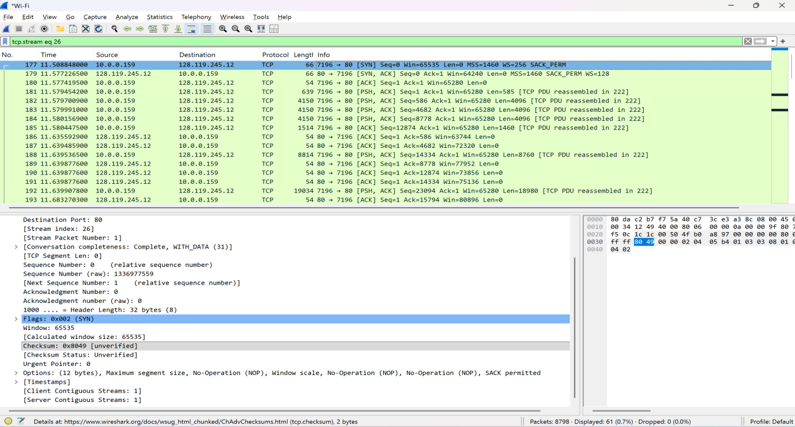
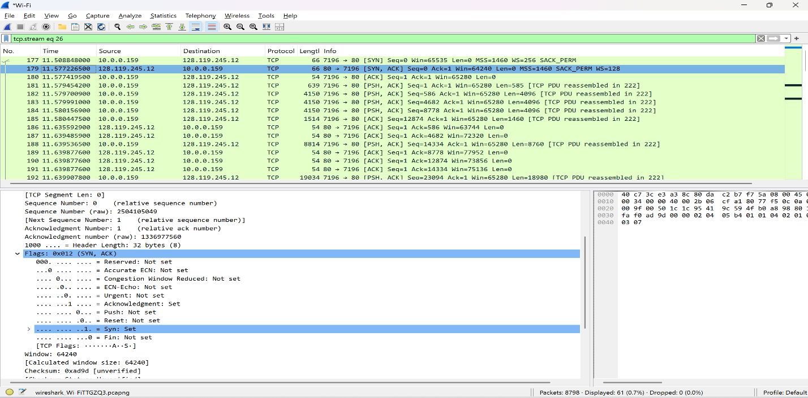
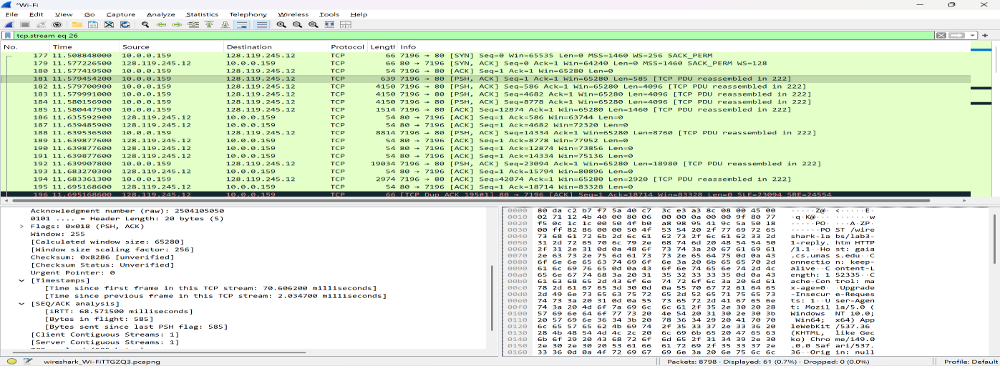
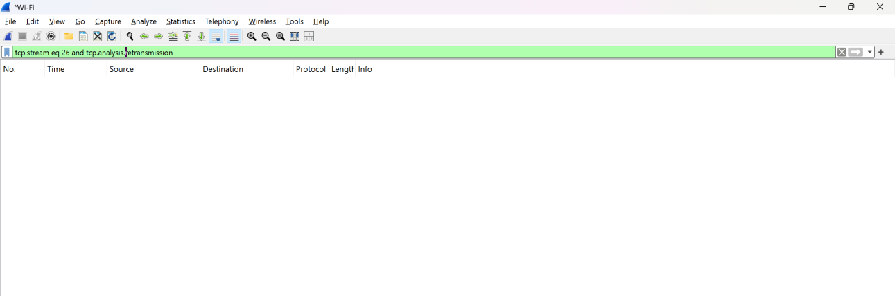

Case study 001 · Network analysis
Wireshark TCP
Traffic Analysis
Packet-level analysis of an HTTP file upload, from connection establishment through acknowledgments, flow control, throughput, and congestion behavior.

Time-sequence graph used to examine TCP transmission growth and congestion behavior.
Understand the complete TCP exchange—not just isolated packets.
The investigation captured an HTTP upload of a 152,335-byte text file to a remote lab server. The goal was to reconstruct the session and explain how TCP established the connection, transported the payload, acknowledged delivery, managed receiver capacity, and adjusted its sending behavior.
How was the connection established and identified?
How quickly were data segments acknowledged?
Did loss, retransmission, or receiver pressure affect delivery?
What did the trace reveal about throughput and congestion control?
Capture, isolate, inspect, calculate, validate.
- 01
Generate known traffic
Uploaded a known text file over HTTP while capturing the active network interface.
- 02
Isolate the session
Identified the relevant client/server conversation and isolated TCP stream 26.
- 03
Inspect protocol fields
Reviewed flags, sequence numbers, acknowledgments, payload lengths, timestamps, and advertised window values.
- 04
Test specific conditions
Applied analysis filters for standard, fast, and spurious retransmissions.
- 05
Calculate performance
Calculated RTT per segment and end-to-end throughput using capture timestamps and content length.
- 06
Visualize behavior
Used the Stevens time-sequence graph to evaluate early transfer growth and congestion behavior.

Client SYN: relative sequence number 0 and SYN flag set.

Server SYN-ACK: sequence 0, acknowledgment 1, both flags set.
Three packets established the session.
The client initiated the exchange with a SYN. The server acknowledged the client’s initial sequence number by returning ACK 1, while also setting its own SYN flag. The client’s final ACK completed the handshake. Relative sequence numbering made the relationship between the initial sequence and acknowledgment values explicit.
The connection state was confirmed through both the displayed flag labels and the underlying TCP flags field—not inferred from packet order alone.
Round-trip timing stayed consistent across the first six data segments.
Each segment’s send time was paired with the timestamp of its corresponding acknowledgment. Five measurements clustered near 59 milliseconds; the sixth completed faster at 43.7 milliseconds.
| Segment | Sequence | Sent (s) | ACK | ACK time (s) | RTT (ms) |
|---|---|---|---|---|---|
| 181 | 1 | 11.5794542 | 186 | 11.6355929 | 56.14 |
| 182 | 586 | 11.5797009 | 187 | 11.6394859 | 59.79 |
| 183 | 4,682 | 11.5799910 | 189 | 11.6398776 | 59.89 |
| 184 | 8,778 | 11.5801569 | 190 | 11.6398776 | 59.72 |
| 185 | 12,874 | 11.5804475 | 191 | 11.6398776 | 59.43 |
| 188 | 14,334 | 11.6395365 | 193 | 11.6832703 | 43.73 |
| Mean RTT | 56.45 ms | ||||

Packet timing fields provided evidence for pairing transmitted segments with acknowledgments.
The receiver did not constrain the sender, and the trace showed no retransmissions.
Available capacity remained well above zero.
Observed in successive acknowledgment values.
Standard, fast, and spurious filters returned no packets.
tcp.stream eq 26 and tcp.analysis.retransmission
tcp.stream eq 26 and tcp.analysis.fast_retransmission
tcp.stream eq 26 and tcp.analysis.spurious_retransmission

An empty result set confirmed that the selected stream contained no standard TCP retransmissions.
Measured application transfer throughput: approximately 668 KB/s.
The duration was measured from the first TCP data segment at 11.5794542 seconds to the HTTP 200 OK response at 11.8074907 seconds. Dividing the HTTP content length by that interval produced the reported rate. This is an application-transfer calculation based on the selected capture boundaries, not a claim about maximum link capacity.
The sequence graph showed rapid early growth followed by a less aggressive progression.
The Stevens graph plotted client-to-server sequence numbers over time. The steep initial rise was consistent with TCP slow start as the sender expanded in-flight data in response to acknowledgments. Growth became less aggressive near 100 KB, suggesting a transition toward congestion avoidance. The capture did not form a perfectly smooth textbook curve because real packet timing, delayed acknowledgments, capture boundaries, and a short transfer all affect the plotted shape.
Sequence-number progression during the client-to-server upload.
The trace documented a clean, stable TCP transfer.
The session established correctly, maintained consistent round-trip timing, retained sufficient receive-buffer capacity, and completed without detected retransmissions. The analysis connected individual header fields and timestamps to higher-level conclusions about reliability, flow control, throughput, and congestion behavior.